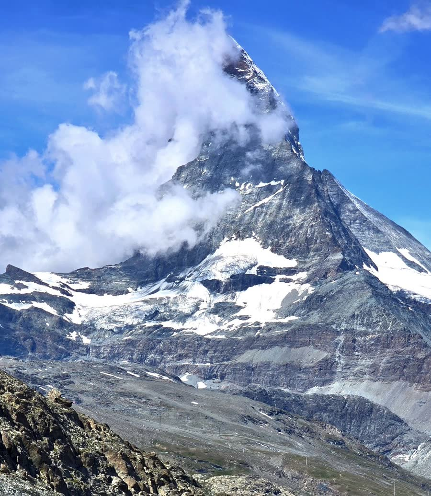

Four summers in Switzerland, a different region every time. These are our favourite places, with how to reach each one and what we'd tell a friend. Spots tagged In the reel are the ones you just watched. Save this page for your trip.
The classic Swiss postcard. Base yourself in Interlaken and do everything here as day trips.
The town between two lakes. The big meadow in the middle, the Höhematte, is where paragliders land with the Jungfrau behind them.
Our tip: stay here and do day trips. It's easier than changing hotels every night.
Sheer cliffs on both sides, waterfalls everywhere, and Staubbach Falls dropping almost 300 m right beside the village.
Our tip: take the cog railway up to car-free Wengen. You get the whole valley from above, and that's where our train shots came from.
A mountain village right under the north face of the Eiger. Take the gondola up to First for the Cliff Walk and the short hike to Bachalpsee lake.
Our tip: the walk to Bachalpsee is about an hour each way and mostly gentle. On a still day the peaks reflect in the lake.
Europe's highest railway station, inside the mountain. Snow all year, the Ice Palace, the Sphinx viewing terrace and the Aletsch Glacier stretching away below you.
Our tip: check the summit webcam before you buy tickets. If the top is in cloud you'll see nothing. Take it slow up there, because the air is thin at almost 3,500 m.
A waterfall that tumbles in stages straight down into the turquoise water of Lake Brienz, with a grand old hotel beside it.
Our tip: the lake's colour is the real show, and it looks best from the water. Take the boat at least one way.
The red carriages and the steam in our reel. A steam cog railway climbs from Brienz to near the summit, with Lake Brienz below you the whole way.
Our tip: sit on the side facing the lake, and book ahead in high summer.
About an hour from Interlaken. Easy to add on the way in from Zurich.
A lakeside old town with the wooden Chapel Bridge, painted houses, the Lion Monument and mountains rising straight out of the lake.
Our tip: walk the Chapel Bridge early before the tour groups, then take a boat out on the lake. Mount Pilatus and Rigi are both day trips from here.
Glacier and snow all year. Ride the Rotair, the revolving cable car, then walk the Titlis Cliff Walk suspension bridge and the blue Glacier Cave. There's a Shah Rukh Khan and Kajol cutout up there for your DDLJ photo.
Our tip: stop at Trübsee on the way down. It's a lovely lake walk and far quieter than the summit.
The Matterhorn. Worth the extra drive south.
The lake from our opening shot. On a calm morning the Matterhorn reflects in the water. It's the classic Swiss view for a reason.
Our tip: get the earliest train you can. The water is stillest in the morning, and by midday the peak often disappears into cloud.
A car-free mountain village with electric taxis, wooden chalets and the Matterhorn at the end of the street.
Our tip: walk to the Kirchbrücke bridge over the river for the best free Matterhorn view in town.
A quieter, sunnier side of Switzerland in the far east.
Lakes, mountains and long sunny days. A good base for the Bernina Pass and Diavolezza.
A cable car takes you right up to glacier views of Piz Palü and the Bernina range. Our favourite high-altitude stop that hardly anyone talks about.
Our tip: take a jacket even in July. It's cold at nearly 3,000 m.
Most of Raj and Simran's Switzerland was shot around Gstaad and Saanen, about 1 hour 15 minutes from Interlaken. Easy in one day by car or on the GoldenPass trains.
Swiss motorways need a yearly e-vignette. Buy it online before you cross the border.
Zermatt, Wengen and Mürren don't allow normal cars. Park in the valley and take the train in.
High mountain passes usually open from around June to October. Check they're open before you plan a route over one.
Drive between regions, then use cog railways and cable cars for the views. Some of the best spots have no road at all.
Opening times, seasons and prices change, so check each railway's own website before you go.